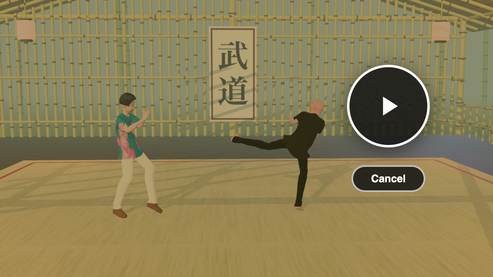
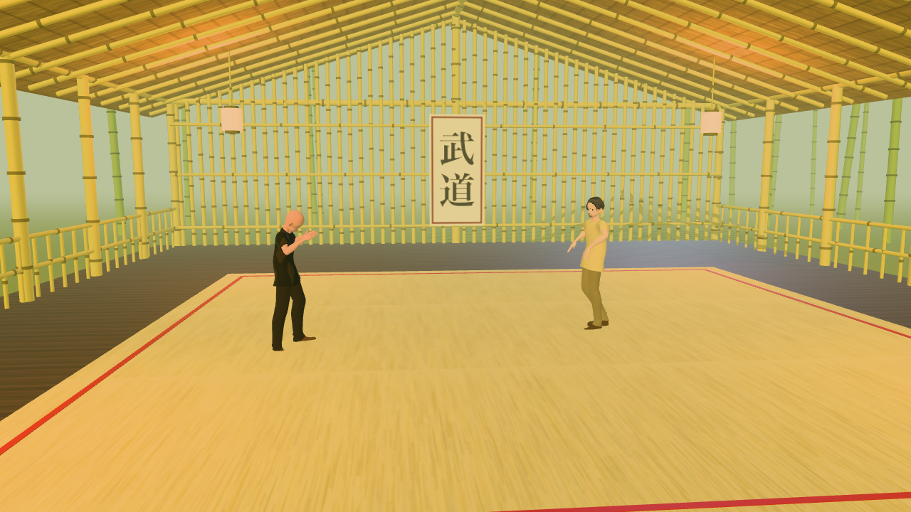

A martial-arts lesson, then a sparring match, in a bamboo dojo

cam-wide camera at 30 s: the teacher demonstrates a kick while the student watches.Two characters, one motion clip. A teacher performs a martial-arts routine in short chunks; after each chunk the student, who has been standing and watching, repeats it. Around them a bamboo hut with warm lanterns and a low sun, and four cameras that cut between over-the-shoulder, side and wide shots. Everything after the import is the JS Shell and the Render tab, and the finished scene is dojo.json in the tejaswigowda/test1 repo.

sparring.json, seen through cam-wide at 12 s.p2, 46.83 s long. Part 2 (step 10 onwards) uses a second pair from the same pipeline whose two clips, st1_1072026Skeleton and st2_1072026Skeleton (170.17 s each), were captured together. That sparring capture was recorded with an OptiTrack system in the course “Martial Arts and Motion Capture” (GAME 294) at Arizona State University, run by Pavan Turaga and recorded by Assegid Kidane; see A sparring match from a two-person motion capture for what to do with it..vroidv110malev113bound-15p2glb) are derived from the imported object names; yours will differ, so check with scene.children.map(o => o.name) and adjust.const or function from one block is not visible in the next, so step 1 stores the shared pieces on window.dojo and every later block starts by pulling out what it needs with const { … } = window.dojo;. Only the bamboo-frame block in step 5 (and, in Part 2, the swap block in step 10 and the shot-list block in step 13) needs await, so only those are wrapped in (async () => { … })();; the Shell does not print what an async block returns, so they leave their results on window.dojo too. holdTimelineAt(t), used throughout, is a Shell global that jumps the whole scene to t seconds — exactly what scrubbing the timeline does.1 Import and pick a teacher
Import both GLBs. They arrive as two top-level groups, each with its own copy of the clip p2, and the same clip name does not clash because a clip is bound to its own character. Make the bald one the teacher and the other the student; below, the teacher is the group whose name contains (15) and the student the one containing (11).
const T = scene.children.find(c => /\(15\)/.test(c.name)); // teacher
const S = scene.children.find(c => /\(11\)/.test(c.name)); // student
const bone = (root, re) => { let r = null; root.traverse(o => { if (!r && o.isBone && re.test(o.name)) r = o; }); return r; };
const wp = b => b.getWorldPosition(new THREE.Vector3());
const hips = ch => bone(ch, /J_Bip_C_Hips/);
window.dojo = { T, S, bone, wp, hips, plan: [] };Check it took: window.dojo.T.name and window.dojo.S.name should print the two character names.
4.5 as the "rest" time: both characters are held there before and between their turns.2 Put them face to face
Imported clips carry root motion: the hips travel through the scene as the clip plays, and the clip's own root node can start well away from the group origin. Placing the groups by their position alone therefore leaves the characters wherever the clip puts them. Instead, measure where the hips are at rest time, then move each group so the hips land on the spots you want.
const { T, S, wp, hips } = window.dojo;
// Hold the whole scene at the rest stance (this is what scrubbing does), then read where each pair of hips is.
holdTimelineAt(4.5);
scene.updateMatrixWorld(true);
const s0 = wp(hips(S)), t0 = wp(hips(T));
// Teacher goes to the mirror image of the student across the origin on z.
const target = new THREE.Vector3(s0.x, 0, -s0.z);
const d = target.clone().sub(t0); d.y = 0;
editor.execute(new SetPositionCommand(editor, T, T.position.clone().add(d)));The pair now stand about 3.4 m apart on the z axis. Next, turn them to face each other. The chest line is the reliable way to measure facing — the angle between the shoulder normal and the direction to the partner — so use it to check, then nudge rotation.y until both read close to 0°:
const { T, S, bone, wp, hips } = window.dojo;
const facingError = (a, b) => {
const l = wp(bone(a, /J_Bip_L_UpperArm/)), r = wp(bone(a, /J_Bip_R_UpperArm/));
const f = l.sub(r).cross(new THREE.Vector3(0, 1, 0)); f.y = 0; f.normalize();
const to = wp(hips(b)).sub(wp(hips(a))); to.y = 0; to.normalize();
return +(f.angleTo(to) * 180 / Math.PI).toFixed(1);
};
[facingError(T, S), facingError(S, T)]; // aim for ~0 at the rest stancerotation.y that makes a character face its partner is not a round number (the teacher ended up near +92° and the student near +272° here). Measure, then adjust — a few degrees either way is easy to see from above in the viewport.While the routine plays, the performer turns and kicks, so the facing error grows mid-move. That is the clip, not the placement; at the rest stance both are within a degree or two.
3 Teach in chunks: the demo, then the repeat
The timeline is a list of directives. $S(selector).at(t).play(clip, { duration }) starts a clip, .seek(time) picks where in the clip to start, and .pause() freezes it. Before its first play a clip shows frame 0 (the T-pose), so first park both characters at the rest stance, then play the routine in three chunks:
- The teacher demonstrates a chunk of the clip while the student stands at rest.
- One second later, the student plays the same chunk while the teacher watches at rest.
- A second after that, the next chunk begins.
const { plan } = window.dojo; // [who, start, end] windows on the timeline
const teacher = $S('.vroidv110malev113bound-15p2glb');
const student = $S('.vroidv110malev113bound-11p2glb');
// Park both on the rest stance: play for 1 s, seek to 4.5 s, pause.
for (const who of [teacher, student]) who.at(0).play('p2', { duration: 1000 }).seek(4.5).pause();
// Three chunks of the 46.8 s clip, in clip time.
const chunks = [[4.5, 16.4], [16.4, 29.1], [29.1, 46.8]];
let t = 1;
for (const [a, b] of chunks) {
const len = +(b - a).toFixed(2);
teacher.at(t).play('p2', { duration: len * 1000 }).seek(a); // teacher demos
teacher.at(+(t + len).toFixed(2)).pause(); // ...and freezes
student.at(+(t + len + 1).toFixed(2)).play('p2', { duration: len * 1000 }).seek(a); // student repeats
student.at(+(t + 2 * len + 1).toFixed(2)).pause();
plan.push(['teacher', t, +(t + len).toFixed(2)], ['student', +(t + len + 1).toFixed(2), +(t + 2 * len + 1).toFixed(2)]);
t = +(t + 2 * len + 2).toFixed(2);
}
editor.timeline.toJSON().duration; // 90.6Open the Animations tab and scrub. The teacher moves from 1 s to 12.9 s while the student holds still, then the student performs the same moves from 13.9 s to 25.8 s, and so on. Each chunk starts where the last one ended in the clip (4.5 → 16.4 → 29.1 → 46.8), so the lesson walks through the whole routine once, demo then repeat, in 90.6 s.
.seek() after .play(). A later play restarts the clip's local time at 0, so the chunk's start has to be re-applied each time. duration is in milliseconds and sets how long the clip runs before the next directive can take over.4 A floor with no grid
A wood base, a tatami mat on top and a boundary tape make the floor. The important detail is the mat's texture: tatami is usually drawn with dark seams, but those read as a grid under the characters, so paint plain straw with random fibres instead — and the texture still tiles.
const dojo = new THREE.Group(); dojo.name = 'Dojo Floor';
const wood = new THREE.Mesh(new THREE.PlaneGeometry(60, 60),
new THREE.MeshStandardMaterial({ color: 0x6b4a2b, roughness: 0.8 }));
wood.name = 'Wood Floor'; wood.rotation.x = -Math.PI / 2; wood.position.y = -0.06; wood.receiveShadow = true;
// Straw texture: a flat tan base with thin random fibres, no seams.
const c = document.createElement('canvas'); c.width = c.height = 512;
const g = c.getContext('2d');
g.fillStyle = '#c9b57c'; g.fillRect(0, 0, 512, 512);
for (let i = 0; i < 2600; i++) {
const x = Math.random() * 512, y = Math.random() * 512, len = 30 + Math.random() * 90;
g.strokeStyle = `hsla(${42 + Math.random() * 8},${30 + Math.random() * 20}%,${48 + Math.random() * 18}%,0.35)`;
g.lineWidth = 1 + Math.random(); g.beginPath(); g.moveTo(x, y); g.lineTo(x + len, y + (Math.random() - 0.5) * 2); g.stroke();
}
const straw = new THREE.CanvasTexture(c);
straw.wrapS = straw.wrapT = THREE.RepeatWrapping; straw.repeat.set(3, 3); straw.colorSpace = THREE.SRGBColorSpace;
// Box faces are [+x, -x, +y, -y, +z, +z]: only the top (+y) gets the straw.
const side = new THREE.MeshStandardMaterial({ color: 0xb8a56c, roughness: 0.9 });
const top = new THREE.MeshStandardMaterial({ map: straw, roughness: 0.9 });
const mat = new THREE.Mesh(new THREE.BoxGeometry(10, 0.06, 10), [side, side, top, side, side, side]);
mat.name = 'Tatami Mat'; mat.position.y = -0.03; mat.receiveShadow = true;
dojo.add(wood, mat);
for (const [x, z, w, d] of [[0, -4.65, 9.3, 0.07], [0, 4.65, 9.3, 0.07], [-4.65, 0, 0.07, 9.3], [4.65, 0, 0.07, 9.3]]) {
const tape = new THREE.Mesh(new THREE.BoxGeometry(w, 0.004, d), new THREE.MeshStandardMaterial({ color: 0x9a2a2a }));
tape.name = 'Boundary Tape'; tape.position.set(x, 0.002, z); dojo.add(tape);
}
editor.execute(new AddObjectCommand(editor, dojo));
scene.fog = new THREE.FogExp2(0xb9c29a, 0.035); // a soft green haze
scene.background = new THREE.Color(0xb9c29a);Check the characters' feet against the mat: both should be within a centimetre of y = 0. If one floats or sinks, nudge that group's position.y with SetPositionCommand.
5 A bamboo hut
The hut is built from the same trick everywhere: a pole is a thin cylinder stretched between two points, with a few short rings along it for the bamboo nodes. Collect all the poles into arrays, merge each array into one mesh, and the whole frame is a handful of draw calls instead of a thousand. The hut is 20 m long and 15 m wide with an open front, so the cameras fly through it freely, and the sun comes in through the open end.
(async () => {
const { mergeGeometries } = await import('three/addons/utils/BufferGeometryUtils.js');
const V3 = THREE.Vector3, UP = new V3(0, 1, 0);
let seed = 11; const rnd = () => (seed = (seed * 16807) % 2147483647) / 2147483647;
const std = o => new THREE.MeshStandardMaterial(Object.assign({ roughness: 0.75 }, o));
const mesh = (name, geom, material, cast = false) => {
const m = new THREE.Mesh(geom, material); m.name = name; m.castShadow = cast; m.receiveShadow = true; return m;
};
// A pole from a to b, plus node rings along it.
const poles = { p: [], n: [] };
const addPole = (set, a, b, r, nodeEvery = 0.55) => {
a = new V3(...a); b = new V3(...b);
const dir = b.clone().sub(a), len = dir.length(); dir.normalize();
const q = new THREE.Quaternion().setFromUnitVectors(UP, dir);
const pole = new THREE.CylinderGeometry(r, r * 1.05, len, 7, 1);
pole.applyMatrix4(new THREE.Matrix4().compose(a.clone().add(b).multiplyScalar(0.5), q, new V3(1, 1, 1)));
set.p.push(pole);
for (let t = 0.3 + rnd() * 0.25; t < len - 0.08; t += nodeEvery + rnd() * 0.15) {
const ring = new THREE.CylinderGeometry(r * 1.25, r * 1.25, 0.05, 7, 1);
ring.applyMatrix4(new THREE.Matrix4().compose(a.clone().addScaledVector(dir, t), q, new V3(1, 1, 1)));
set.n.push(ring);
}
};
const X0 = -10, X1 = 10, ZW = 7.5, EAVE = 3.5, RIDGE = 6.1, EZ = 8.2; // hut extents
// Posts every 2.5 m on both long sides, with beams along the tops.
for (let x = X0; x <= X1 + 1e-6; x += 2.5) for (const z of [-ZW, ZW]) addPole(poles, [x, 0, z], [x, 3.85, z], 0.1, 0.7);
for (const z of [-ZW, ZW]) addPole(poles, [X0 - 0.2, 3.8, z], [X1 + 0.2, 3.8, z], 0.08, 1.0);
// Ridge pole and rafters (one every metre, on both slopes).
for (const x of [X0, X1]) addPole(poles, [x, 0, 0], [x, RIDGE + 0.1, 0], 0.11, 0.8);
addPole(poles, [X0 - 1.2, RIDGE + 0.05, 0], [X1 + 1.2, RIDGE + 0.05, 0], 0.1, 1.0);
for (let x = X0 - 0.5; x <= X1 + 0.5 + 1e-6; x += 1) for (const s of [-1, 1]) addPole(poles, [x, RIDGE, 0], [x, EAVE, s * EZ], 0.05, 1.2);
// Back wall: vertical slats that follow the gable, with three lashed rails.
for (let z = -ZW; z <= ZW + 1e-6; z += 0.28) addPole(poles, [X0 + 0.05, 0, z], [X0 + 0.05, RIDGE - 0.05 - Math.abs(z) * 0.317, z], 0.05, 0.6);
for (const y of [0.5, 1.9, 3.2]) addPole(poles, [X0 + 0.15, y, -ZW], [X0 + 0.15, y, ZW], 0.04, 1.4);
// Low railings along both long sides.
for (const z of [-ZW, ZW]) {
for (const y of [0.5, 1.0]) addPole(poles, [X0, y, z], [X1, y, z], 0.04, 1.4);
for (let x = X0 + 0.4; x < X1; x += 0.45) addPole(poles, [x, 0, z], [x, 1.0, z], 0.03, 0.6);
}
const hut = new THREE.Group(); hut.name = 'Bamboo Hut';
hut.add(mesh('Bamboo Frame', mergeGeometries(poles.p), std({ color: 0xc7b256, roughness: 0.55 }), true));
hut.add(mesh('Bamboo Nodes', mergeGeometries(poles.n), std({ color: 0x74672a, roughness: 0.7 })));
// Hand everything the next blocks need over on window.dojo.
Object.assign(window.dojo, { mergeGeometries, rnd, std, mesh, addPole, hut, K: { X0, X1, ZW, EAVE, RIDGE, EZ } });
})();Nothing is in the scene yet: the hut group is held on window.dojo.hut until the next block adds the roof and the scroll and puts the whole thing in.
Now the thatch roof: two tilted boxes with a straw texture drawn on a canvas, and a rolled ridge cap. Then a calligraphy scroll on the back wall — drawn on a canvas too, with the characters 武道 ("martial way").
const { rnd, std, mesh, hut } = window.dojo;
const { X0, EAVE, RIDGE, EZ } = window.dojo.K;
// Thatch texture: brown base, 1600 random strands, a dark band every 32 px.
const tc = document.createElement('canvas'); tc.width = tc.height = 256;
const tx = tc.getContext('2d');
tx.fillStyle = '#8f6f37'; tx.fillRect(0, 0, 256, 256);
for (let i = 0; i < 1600; i++) {
const x = rnd() * 256, y = rnd() * 256, len = 20 + rnd() * 50;
tx.strokeStyle = `hsla(${34 + rnd() * 10},${35 + rnd() * 20}%,${28 + rnd() * 30}%,0.55)`;
tx.lineWidth = 1 + rnd() * 1.6; tx.beginPath(); tx.moveTo(x, y); tx.lineTo(x + (rnd() - 0.5) * 4, y + len); tx.stroke();
}
for (let y = 0; y < 256; y += 32) { tx.fillStyle = 'rgba(40,28,10,0.35)'; tx.fillRect(0, y, 256, 3); }
const thatch = new THREE.CanvasTexture(tc);
thatch.wrapS = thatch.wrapT = THREE.RepeatWrapping; thatch.repeat.set(8, 3); thatch.colorSpace = THREE.SRGBColorSpace;
const thatchMat = () => std({ map: thatch, roughness: 0.95 });
const tilt = Math.atan2(RIDGE - EAVE, EZ), slope = Math.hypot(RIDGE - EAVE, EZ);
for (const s of [-1, 1]) {
const roof = mesh('Thatch Roof ' + (s > 0 ? 'South' : 'North'), new THREE.BoxGeometry(22.8, 0.24, slope + 0.5), thatchMat());
roof.position.set(0, (RIDGE + EAVE) / 2 + Math.cos(tilt) * 0.17, s * (EZ / 2 + Math.sin(tilt) * 0.17));
roof.rotation.x = s * tilt; hut.add(roof);
}
const ridge = mesh('Ridge Roll', new THREE.CylinderGeometry(0.24, 0.24, 23, 10), thatchMat());
ridge.rotation.z = Math.PI / 2; ridge.position.set(0, RIDGE + 0.28, 0); hut.add(ridge);
// Scroll on the back wall.
const sc = document.createElement('canvas'); sc.width = 256; sc.height = 512;
const sx = sc.getContext('2d');
sx.fillStyle = '#efe3c4'; sx.fillRect(0, 0, 256, 512);
sx.strokeStyle = '#7a1d1d'; sx.lineWidth = 10; sx.strokeRect(14, 14, 228, 484);
sx.fillStyle = '#16120d'; sx.textAlign = 'center'; sx.font = 'bold 170px "Hiragino Mincho ProN","Yu Mincho",serif';
sx.fillText('武', 128, 220); sx.fillText('道', 128, 410);
const scrollTex = new THREE.CanvasTexture(sc); scrollTex.colorSpace = THREE.SRGBColorSpace;
const scroll = mesh('Dojo Scroll', new THREE.PlaneGeometry(1.5, 3), std({ map: scrollTex, roughness: 0.9 }));
scroll.position.set(X0 + 0.28, 2.0, 0); scroll.rotation.y = Math.PI / 2; hut.add(scroll);
editor.execute(new AddObjectCommand(editor, hut));6 A grove outside, and the lighting
The grove is the same pole helper again: 64 tall stalks scattered outside the hut footprint, leaning a little, with a leaf canopy on half of them, over a green ground plane. It shows through the slats and over the rails and gives the scene a surrounding. The floor from step 4 shrinks to the hut's footprint so the grove ground can take over outside it.
const { mergeGeometries, rnd, std, mesh, addPole } = window.dojo;
const grove = { p: [], n: [] }, leaves = [];
for (let placed = 0; placed < 64;) {
const x = (rnd() * 2 - 1) * 20, z = (rnd() * 2 - 1) * 20;
if (Math.abs(x) < 12 && Math.abs(z) < 10.8) continue; // keep the hut itself clear
const h = 8 + rnd() * 5, lx = (rnd() - 0.5) * 0.9, lz = (rnd() - 0.5) * 0.9;
addPole(grove, [x, 0, z], [x + lx, h, z + lz], 0.07 + rnd() * 0.05, 0.6);
if (placed % 2 === 0) { const l = new THREE.IcosahedronGeometry(1.5, 1); l.scale(1.7, 0.8, 1.7); l.translate(x + lx, h - 0.4, z + lz); leaves.push(l); }
placed++;
}
const groveGroup = new THREE.Group(); groveGroup.name = 'Bamboo Grove';
groveGroup.add(mesh('Grove Stalks', mergeGeometries(grove.p), std({ color: 0x8aa23f, roughness: 0.6 })));
groveGroup.add(mesh('Grove Nodes', mergeGeometries(grove.n), std({ color: 0x4d5a22 })));
groveGroup.add(mesh('Grove Leaves', mergeGeometries(leaves), std({ color: 0x5c8a33, roughness: 0.95 })));
const ground = mesh('Grove Ground', new THREE.PlaneGeometry(140, 140), std({ color: 0x7b8a47, roughness: 1 }));
ground.rotation.x = -Math.PI / 2; ground.position.y = -0.075; groveGroup.add(ground);
editor.execute(new AddObjectCommand(editor, groveGroup));
// Shrink the wood floor to the hut footprint (scale on the plane's own x/y axes).
editor.execute(new SetScaleCommand(editor, scene.getObjectByName('Wood Floor'), new THREE.Vector3(21.4 / 60, 16.6 / 60, 1)));Lighting is five different jobs. A hemisphere light fills shadows with warm sky and brown ground bounce; a low warm sun through the open end casts the long soft shadows that make the floor read as a floor; a cool rim from behind separates the characters from the back wall; and four paper lanterns are both a visible mesh and a point light that pools orange on the mat.
const { std, mesh } = window.dojo;
const lights = new THREE.Group(); lights.name = 'Hut Lighting';
const hemi = new THREE.HemisphereLight(0xfff0d2, 0x3a3020, 0.85); hemi.name = 'Sky Fill'; lights.add(hemi);
const sun = new THREE.DirectionalLight(0xffd59a, 2.6); sun.name = 'Sun Key';
sun.position.set(14, 5, 5); sun.castShadow = true;
Object.assign(sun.shadow.camera, { left: -5, right: 5, top: 5, bottom: -5, near: 2, far: 40 });
sun.shadow.mapSize.set(2048, 2048); sun.shadow.bias = -0.0004; sun.shadow.normalBias = 0.03; // no acne on skin
lights.add(sun);
const rim = new THREE.DirectionalLight(0x9db9ff, 0.55); rim.name = 'Cool Rim'; rim.position.set(-12, 6, -5); lights.add(rim);
[[-5, 4.8], [-5, -4.8], [3.5, 4.8], [3.5, -4.8]].forEach(([x, z], i) => {
const glow = new THREE.PointLight(0xffa24a, 22, 13, 2); glow.name = 'Lantern Light ' + (i + 1); glow.position.set(x, 3, z);
const paper = mesh('Paper Lantern ' + (i + 1), new THREE.CylinderGeometry(0.2, 0.2, 0.42, 12),
std({ color: 0xffd9a3, emissive: 0xffa24a, emissiveIntensity: 1.6, roughness: 0.8 }));
paper.position.copy(glow.position); lights.add(glow, paper);
});
editor.execute(new AddObjectCommand(editor, lights));
scene.environmentIntensity = 0.45; // the default environment is bright; this stops it flattening the key and rimscene.traverse(o => { if (o.isSkinnedMesh) o.castShadow = o.geometry.attributes.position.count >= 700; });7 Four cameras that follow the performer
Each camera is a PerspectiveCamera with a key every half second, so it moves along with the characters instead of sitting still. The keys are computed from the characters' actual hip and head positions at each time, sampled by holding the timeline at that moment, which is why the previous steps' alignment matters: the first version of these cameras was keyed before the teacher was corrected, and half the shots missed him entirely. The four cameras:
cam-wide— a slow push-in from the front, framing both characters and the mat.cam-side— a slow orbit around whoever is performing.cam-student-pov/cam-teacher-pov— over the watcher's shoulder, looking at the performer.
const { T, S, bone, wp, hips, plan } = window.dojo;
// Create the cameras in one group.
const camGroup = new THREE.Group(); camGroup.name = 'CAMERAS';
for (const [name, fov] of [['cam-wide', 38], ['cam-student-pov', 42], ['cam-teacher-pov', 42], ['cam-side', 32]]) {
const cam = new THREE.PerspectiveCamera(fov, 16 / 9, 0.1, 200); cam.name = name; camGroup.add(cam);
}
editor.execute(new AddObjectCommand(editor, camGroup));
// Sample hips and head of both characters every half second.
const END = 93.5, times = [];
for (let t = 0.5; t <= END + 1e-6; t += 0.5) times.push(+t.toFixed(3));
const samples = [];
for (const t of times) {
holdTimelineAt(t); scene.updateMatrixWorld(true);
samples.push({ Th: wp(hips(T)), Thd: wp(bone(T, /J_Bip_C_Head$/)), Sh: wp(hips(S)), Shd: wp(bone(S, /J_Bip_C_Head$/)) });
}
holdTimelineAt(0);
// Smooth each series (gaussian over +/-6 samples) so the cameras don't jitter with the moves.
const smooth = (series, sigma) => series.map((_, i) => {
const acc = new THREE.Vector3(); let w = 0;
for (let j = Math.max(0, i - 6); j <= Math.min(series.length - 1, i + 6); j++) {
const k = Math.exp(-((j - i) ** 2) / (2 * sigma * sigma)); acc.addScaledVector(series[j], k); w += k;
}
return acc.multiplyScalar(1 / w);
});
const Th = smooth(samples.map(s => s.Th), 1.5), Sh = smooth(samples.map(s => s.Sh), 1.5);
const Thd = smooth(samples.map(s => s.Thd), 1.5), Shd = smooth(samples.map(s => s.Shd), 1.5);
const r3 = v => v.toArray().map(n => +n.toFixed(3));
// Over-the-shoulder: just behind and beside the watcher's head, looking at the performer.
const behind = (head, from, to) => {
const d = to.clone().sub(from); d.y = 0; d.normalize();
const side = new THREE.Vector3(-d.z, 0, d.x);
return head.clone().addScaledVector(d, -0.8).addScaledVector(side, 0.5).setY(1.7);
};
const keys = { wide: [], pS: [], pT: [], side: [] };
times.forEach((t, i) => {
const u = t / END;
const win = plan.find(([who, s, e]) => t >= s && t < e);
const perf = win ? win[0] : 'teacher';
const P = perf === 'teacher' ? Th[i] : Sh[i]; // who is performing now
keys.wide.push({ t, pos: [+(8.4 - 0.9 * u).toFixed(3), 2.0, +(0.4 * Math.sin(u * 6.28)).toFixed(3)], lookAt: [0, 1.0, 0], fov: 38 });
keys.pS.push({ t, pos: r3(behind(Shd[i], Sh[i], Th[i])), lookAt: r3(Th[i].clone().setY(0.9)), fov: 42 });
keys.pT.push({ t, pos: r3(behind(Thd[i], Th[i], Sh[i])), lookAt: r3(Sh[i].clone().setY(0.9)), fov: 42 });
const a = win ? (t - win[1]) / (win[2] - win[1]) : 0, ang = -0.5 + a; // orbit through one radian per window
keys.side.push({ t, pos: r3(new THREE.Vector3(P.x + 4.2 * Math.cos(ang), 1.5, P.z + 4.2 * Math.sin(ang))), lookAt: r3(new THREE.Vector3(P.x, 0.95, P.z)), fov: 32 });
});
$S('#cam-wide').setKeys(keys.wide, { smooth: true });
$S('#cam-student-pov').setKeys(keys.pS, { smooth: true });
$S('#cam-teacher-pov').setKeys(keys.pT, { smooth: true });
$S('#cam-side').setKeys(keys.side, { smooth: true });setKeys turns each list into a smooth spline, so the cameras glide between the half-second keys. The timeline now runs to 93.5 s: the 90.6 s lesson plus the last camera keys, which hold the closing wide shot.
8 Cut between them in the Render tab
Cameras alone do nothing until the Render tab's Camera Sequence says when each one is live. Each demo or repeat window opens on the over-the-shoulder shot of the performer, cuts to the side orbit at the midpoint, and returns to the wide as the window ends — three cameras per window, nineteen shots in all. The sequence lives in scene.userData.renderShots, the same list the + Add Shot button edits, so it is saved with the scene and can be written from the Shell:
const { plan } = window.dojo;
const uuid = n => scene.getObjectByName(n).uuid;
const cuts = [[0, 'cam-wide']];
for (const [who, s, e] of plan) {
cuts.push([s, who === 'teacher' ? 'cam-student-pov' : 'cam-teacher-pov']); // watcher's shoulder
cuts.push([+((s + e) / 2).toFixed(2), 'cam-side']); // side orbit at the midpoint
cuts.push([e, 'cam-wide']); // back to the wide
}
scene.userData.renderShots = cuts.map(([at, name], i) => ({ id: 'shot-' + i, at, camera: uuid(name), transition: 'cut', transitionDur: 0.5 }));
editor.signals.timelineChanged.dispatch(); // the Render tab refreshes its listOpen the Render tab and the Camera Sequence list shows cam-wide @ 0.00s, cam-student-pov @ 1.00s, cam-side @ 6.95s and so on. To preview a shot, pick a camera from the viewport's camera menu and scrub the Animations tab. To check every shot at once, project the performer's head, hips, hands and feet through the shot's camera and see that all six land in the frame:
const { T, S, bone, wp, plan } = window.dojo;
const END = editor.timeline.toJSON().duration;
const names = ['J_Bip_C_Head$', 'J_Bip_C_Hips', 'J_Bip_L_Foot$', 'J_Bip_R_Foot$', 'J_Bip_L_Hand$', 'J_Bip_R_Hand$'];
const misses = [];
for (let t = 0.5; t < END; t += 0.5) {
holdTimelineAt(t); scene.updateMatrixWorld(true);
const shot = scene.userData.renderShots.filter(s => s.at <= t).pop();
const cam = scene.getObjectByProperty('uuid', shot.camera); cam.updateMatrixWorld(true); cam.updateProjectionMatrix();
const win = plan.find(([, s, e]) => t >= s && t < e);
const who = cam.name === 'cam-wide' ? [T, S] : win ? [win[0] === 'teacher' ? T : S] : [];
for (const ch of who) {
const out = names.filter(n => { const p = wp(bone(ch, new RegExp(n))).project(cam); return !(Math.abs(p.x) < 0.98 && Math.abs(p.y) < 0.98 && p.z < 1); });
if (out.length) misses.push([t, cam.name, out.length]);
}
}
holdTimelineAt(0);
misses; // empty = every shot has its performer fully in frameRender it from the same tab: Video Render picks up the Camera Sequence on its own. The scene runs 93.5 s, so keep the tab in the foreground while it renders; browsers throttle hidden tabs, which makes frames stall.
9 Two things that bite: vanishing parts and slow playback
With two VRoid characters the scene holds 83 skinned meshes — each character is split into dozens (hair strands, face parts, jacket, trousers...) — and that exposes two problems that a single simple character never shows.
- Heads and parts disappear while playing. three.js decides whether to draw a mesh from its bounding sphere, and a skinned mesh's sphere is computed from the bind pose, not the animated pose. A root-motion clip carries a character far from that pose, so the engine culls pieces that are still on screen. The fix is
mesh.frustumCulled = falseon every skinned mesh. - Playback is slow. Each skinned mesh had its own skeleton of 109 bones, so every frame did the 109 bone-matrix updates 83 times. In a CPU profile that one function took about 45% of the time. The meshes of one character already share the same bones, and their inverse-bind matrices differ only by one constant matrix per mesh, so a single skeleton can serve them all if that constant is folded into each mesh's
bindMatrix. The skinned vertices came out identical (to about 6e-8) and the 83 skeletons became 2.
You don't have to do anything: both fixes run automatically every time an object is added to the scene (optimizeSkinnedMeshes in editor/js/mesh/skinnedPerf.js), including when a saved scene loads. If a mesh's inverse-bind matrices are not related by a constant, it keeps its own skeleton and is left alone. To see what you have:
const skinned = []; scene.traverse(o => { if (o.isSkinnedMesh) skinned.push(o); });
({ meshes: skinned.length,
skeletons: new Set(skinned.map(m => m.skeleton)).size,
culled: skinned.filter(m => m.frustumCulled).length }); // { meshes: 83, skeletons: 2, culled: 0 }10 Dress them, and give them a face
The imported characters keep whatever they were exported in: here the student wears a loud floral shirt and tan trousers and is in shoes, which reads badly in a dojo. Three small passes fix the look — customize the characters, give them a face (where they look, and a blink), and adjust the light and the wide camera to match. Nothing here edits a vertex, a skin weight or the skeleton, so both rigs still animate exactly as before.
Customize. The Customize tab (or, as here, the same ops from the Shell) changes the look through a closed, rig-safe set: tint, recolor, hide, blendshape. Label the two characters first so they have readable selectors, then dress them. The student becomes an off-white gi and goes barefoot, like the teacher; the teacher's black is lifted slightly so the folds still read against the dark wall:
(async () => {
const { CustomizeCommand } = await import('./commands/CustomizeCommand.js');
const { SetLabelCommand } = await import('./commands/SetLabelCommand.js');
const { T, S } = window.dojo;
editor.execute(new SetLabelCommand(editor, T, 'teacher')); // $S('#teacher')
editor.execute(new SetLabelCommand(editor, S, 'student')); // $S('#student')
const dress = (who, ops, name) => editor.execute(new CustomizeCommand(editor, who, ops, name));
dress(S, [
{ op: 'recolor', target: 'part:shirt', color: '#ece7dc' }, // a flat colour replaces the printed shirt
{ op: 'recolor', target: 'part:bottom', color: '#e2dccd' },
{ op: 'hide', target: 'part:shoes' },
], 'Student: white gi, barefoot');
dress(T, [
{ op: 'recolor', target: 'part:shirt', color: '#262833' },
{ op: 'recolor', target: 'part:bottom', color: '#1c1d26' },
], 'Teacher: black gi');
})();The Customize tab shows a rig fingerprint (Verify rig) that is unchanged by all of this. Parts are found by their material names (…_Tops_…_CLOTH, …_Shoes_…), which is how these VRoid exports are laid out; part:hair, part:skin and part:brows work the same way.
A face. A face is two keyed channels on the same timeline as the body clip: expression (continuous morph weights) and gaze (where the eyes and head aim), with a seeded idle layer under them. Give both a calm, held expression, then keep each one's eyes on the other. The student watches the teacher's demos; the teacher watches the student's repeats; and the student takes a short, respectful glance away in the middle of each repeat:
const teacher = $S('#teacher'), student = $S('#student');
// calm and focused: small, readable values, held for the whole scene
const calm = { browDownLeft: 0.12, browDownRight: 0.12, mouthPressLeft: 0.15, mouthPressRight: 0.15 };
teacher.face.keyAt(0, { shapes: calm, duration: 0, hold: true });
student.face.keyAt(0, { shapes: { ...calm, browInnerUp: 0.08 }, duration: 0, hold: true });
// where they look: a selector target FOLLOWS that character as they move
teacher.gaze(0, '#student', { duration: 0, head: 0.45 });
student.gaze(0, '#teacher', { duration: 0, head: 0.45 });
for (const t of [13.9, 40.5, 72.9]) teacher.gaze(t, '#student', { duration: 500, head: 0.5 }); // the student's repeats begin
for (const t of [1, 26.8, 54.2]) student.gaze(t, '#teacher', { duration: 500, head: 0.5 }); // the teacher's demos begin
// a glance away and back in the middle of each repeat ('away' is a fixed averted look)
for (const t of [19.5, 46.5, 80]) student.gaze(t, 'away', { duration: 300, head: 0.2 }).gaze(t + 1.1, '#teacher', { duration: 400 });
// not looking dead: a seeded blink, a faint breath, a little gaze micro-noise
student.face.idle({ seed: 21 });
teacher.face.idle({ seed: 22 });
student.face.asCommand(); // the commands that rebuild this face exactly- Presets would be the same keys.
face.applyPreset('focus', t)writes explicit per-shape keys; a preset is never stored, only its values, so every key stays editable. - The eyes lead, the head lags. On each retarget the head starts 0.1 s after the eyes and takes longer to arrive; the
headweight is the share of the aim the head takes (0is a glance). Past the eyes' comfortable range the head takes over, so there are no doll eyes. - Seeded. The same scene renders the same blinks on every run. The idle layer is an underlayer: it never becomes keys,
face.idle(false)removes it, and your authored keys are untouched. - The same keys are in the GUI. In the Customize tab, Key at playhead makes the preset and sliders write keys; Face performance keys a gaze and toggles the idle layer. The Animations tab shows them as blocks on each character's row and in the code panel. One undo stack covers all of it.
The moments are the window starts from step 3 (teacher demos at 1, 26.8 and 54.2 s; student repeats at 13.9, 40.5 and 72.9 s), and the glances sit just before the middle of each repeat. To check the eyes, scrub to a time and measure the angle between where the eyes point and the other character's head; on this scene it stays within about 1° wherever the target is in the eyes' range. Authoring a face covers expression keys, easing and the details in full.
Light and the wide camera. The lesson's fog and fill made the hut look washed out and left the figures flat against the wall. Pull the fog back, drop the sky fill a little, lift the sun, and strengthen the cool rim light so it separates the figures from the background:
const light = n => { let r; scene.traverse(o => { if (o.isLight && o.name === n) r = o; }); return r; };
const set = (o, k, v) => editor.execute(new SetValueCommand(editor, o, k, v));
set(light('Sky Fill'), 'intensity', 0.6); // was 0.85
set(light('Sun Key'), 'intensity', 3.1); // was 2.6
set(light('Cool Rim'), 'intensity', 1.2); // was 0.55
set(scene.fog, 'density', 0.02); // was 0.035The wide camera showed too much roof and floor with small figures, so bring it in: 8% closer to the point it looks at, lower (1.6 m), and a 35° field of view instead of 38°. This edits every key of the camera's move in one undoable step. Run it once: it is a change relative to the keys as they are now, so running it twice pulls the camera in twice (Undo backs it out).
(async () => {
const { editCameraTrack } = await import('./intelligence/cameraMoveEdit.js');
editCameraTrack(editor, scene.getObjectByName('cam-wide'), 'Camera: tighten cam-wide', track => {
for (const ev of track.events) {
const p = ev.args.props;
if (ev.op !== 'animate' || !p || !p.to || !p.to.position) continue;
const L = p.lookAt, q = p.to.position;
p.to.position = [+(L[0] + (q[0] - L[0]) * 0.92).toFixed(3), 1.6, +(L[2] + (q[2] - L[2]) * 0.92).toFixed(3)];
p.lookAt = [L[0], 1.02, L[2]];
p.fov = 35;
}
});
})();Scrub the timeline with cam-wide selected, or step through the Render tab's Camera Sequence, to see the result. The finished lesson scene, dojo.json, has all of this in it. The other three cameras are unchanged.
11 Part 2 — swap in the sparring pair
The lesson used one clip on two characters. A real sparring match needs the opposite: two clips captured together, one per fighter. These two GLBs come from the same pipeline as before and carry st1_1072026Skeleton and st2_1072026Skeleton, each 170.17 s long, with the same 109-bone VRoid skeleton. Import both (the hut, floor, lights and cameras stay), then remove the lesson pair (and, with it, the look and the face from step 10), prune the lesson clips that were bound to them (two 46.8 s clips that would otherwise be saved with the scene for nothing), name the fighters, and clear the timeline: its directives and camera keys all pointed at the old characters.
(async () => {
const { SetTimelineCommand } = await import('./commands/SetTimelineCommand.js');
const { TimelineModel } = await import('./intelligence/timeline.js');
const { SetLabelCommand } = await import('./commands/SetLabelCommand.js');
const { T, S } = window.dojo; // the lesson pair from step 1
// 1. Remove the lesson pair, and the clips that belonged to them.
const dead = new Set();
for (const o of [T, S]) o.traverse(x => dead.add(x.uuid));
for (const o of [T, S]) editor.execute(new RemoveObjectCommand(editor, o));
editor.execute(new SetValueCommand(editor, scene, 'animations',
scene.animations.filter(c => !c.tracks.some(t => dead.has(t.name.split('.')[0])))));
// 2. Name the fighters. Selectors match the label, so label them as well as renaming.
const f1 = scene.children.find(c => /_st1_/.test(c.name)); // the bald fighter
const f2 = scene.children.find(c => /_st2_/.test(c.name));
for (const [o, n] of [[f1, 'f1'], [f2, 'f2']]) {
editor.execute(new SetValueCommand(editor, o, 'name', n));
editor.execute(new SetLabelCommand(editor, o, n));
}
// 3. Empty the timeline (undoable like everything else).
editor.execute(new SetTimelineCommand(editor, TimelineModel.fromJSON(null).toJSON(), 'Reset timeline for sparring'));
window.dojo = { ...window.dojo, f1, f2 };
})();#f1, not .f1. Renaming an imported group does not recompute its derived class, so $S('.f1') matches nothing. The label is what #f1 matches, which is why the block sets it. Check with $S('#f1').count() and $S('#f2').count(); both should be 1.import() typed into the Shell resolves relative to Shell.js itself, so the editor's own modules are ./Command.js, ./commands/… and ./intelligence/… — not ./editor/js/…. (three/addons/…, as in step 5, resolves through the page's import map.)12 Play both clips from zero, and do not move them
One directive each. Both clips are the same length, so both start at 0 and run to the end together; duration is in milliseconds and is what makes the timeline 170.17 s long.
$S('#f1').at(0).play('st1_1072026Skeleton', { duration: 170170 });
$S('#f2').at(0).play('st2_1072026Skeleton', { duration: 170170 });
editor.timeline.toJSON().duration; // 170.17The placement is the part to get right. The two clips share one world frame: their root motion already says where each fighter stands relative to the other at every moment. Drag one fighter by hand and you change that relationship, and the bodies start to overlap. To measure it, sample both skeletons every half second and count the moments when any pair of body points, one from each fighter, comes within 12 cm:
const { f1, f2, bone } = window.dojo;
const re = ['C_Head$', 'C_Chest$', 'C_Hips', 'L_Hand$', 'R_Hand$', 'L_Foot$', 'R_Foot$',
'L_LowerLeg$', 'R_LowerLeg$', 'L_LowerArm$', 'R_LowerArm$'].map(n => new RegExp('J_Bip_' + n));
const pts = ch => re.map(r => bone(ch, r).getWorldPosition(new THREE.Vector3()));
let overlaps = 0;
for (let t = 0.5; t < 170; t += 0.5) {
holdTimelineAt(t); scene.updateMatrixWorld(true);
const A = pts(f1), B = pts(f2);
if (Math.min(...A.flatMap(a => B.map(b => a.distanceTo(b)))) < 0.12) overlaps++;
}
holdTimelineAt(0);
overlaps; // 1 at the import position; 15 with the bald fighter dragged 1 m along zEach fighter sits at the position the importer gave it (userData.importNormalize.applied.position), and that is where they should stay. What you can change is where the whole pair stands on the mat, because moving both by the same amount keeps their relationship intact. Sample the hips across the whole clip, take the centre of the box they cover, and shift both groups so that centre lands on the middle of the mat. The same block puts both fighters back at their import position first, so it is safe to re-run, and turns on shadows for the bigger body parts, as in step 6:
const { f1, f2, bone, wp } = window.dojo;
// Start from the importer's positions (this also makes the block safe to re-run).
for (const ch of [f1, f2]) {
editor.execute(new SetPositionCommand(editor, ch, new THREE.Vector3(...ch.userData.importNormalize.applied.position)));
}
const hips = ch => bone(ch, /J_Bip_C_Hips/), box = new THREE.Box3();
for (let t = 0; t <= 170; t += 0.5) {
holdTimelineAt(t); scene.updateMatrixWorld(true);
box.expandByPoint(wp(hips(f1))); box.expandByPoint(wp(hips(f2)));
}
const c = box.getCenter(new THREE.Vector3());
for (const ch of [f1, f2]) {
editor.execute(new SetPositionCommand(editor, ch, new THREE.Vector3(ch.position.x - c.x, ch.position.y, ch.position.z - c.z)));
}
scene.traverse(o => { if (o.isSkinnedMesh) o.castShadow = o.geometry.attributes.position.count >= 700; });
holdTimelineAt(0);
box.min.toArray().concat(box.max.toArray()); // for these clips: x -1.5..2.0, z -4.3..2.2 before the shift13 Cameras that follow the pair
Reuse the four cameras from step 7 — they stay in the CAMERAS group — but give them new keys and new jobs. For the lesson the interesting quantity was who is performing. For a spar it is where the pair is and how far apart they are: the midpoint between the hips, and their distance. The two over-the-shoulder cameras are renamed cam-f1-pov and cam-f2-pov (each sits behind its own fighter and looks at the other), and everything is keyed every half second across all 170 s:
cam-wide— from the open front of the hut, pulling back as the pair separates: the distance is5.2 + 1.2 × gap, clamped to 6.5–8.2 m, and never past x = 9, because the hut's front ridge pole stands at x = 10.cam-side— an orbit of ±0.45 rad around the pair's midpoint, with a radius of3.4 + 1.15 × gap(4.4–7.2 m) and a 44° field of view. The small angle and the radius cap keep it inside the rails at z = ±7.5.cam-f1-pov/cam-f2-pov— 0.8 m behind the watcher's head and 0.5 m to the side, at 1.7 m high, looking at the other fighter's chest.
const { f1, f2, bone, wp } = window.dojo;
const V = (x, y, z) => new THREE.Vector3(x, y, z), r3 = v => v.toArray().map(n => +n.toFixed(3));
const clamp = (v, a, b) => Math.min(b, Math.max(a, v));
// Rename the shoulder cameras from step 7 for the new cast.
for (const [a, b] of [['cam-student-pov', 'cam-f1-pov'], ['cam-teacher-pov', 'cam-f2-pov']]) {
editor.execute(new SetValueCommand(editor, scene.getObjectByName(a), 'name', b));
}
// Sample hips and heads of both fighters every half second.
const END = 170, times = [];
for (let t = 0.5; t <= END + 1e-6; t += 0.5) times.push(+t.toFixed(3));
const samples = times.map(t => {
holdTimelineAt(t); scene.updateMatrixWorld(true);
return { h1: wp(bone(f1, /J_Bip_C_Hips/)), h2: wp(bone(f2, /J_Bip_C_Hips/)), d1: wp(bone(f1, /J_Bip_C_Head$/)), d2: wp(bone(f2, /J_Bip_C_Head$/)) };
});
holdTimelineAt(0);
// Smooth each series (gaussian over +/-8 samples) so the cameras don't jitter with the moves.
const smooth = (series, sigma) => series.map((_, i) => {
const acc = V(0, 0, 0); let w = 0;
for (let j = Math.max(0, i - 8); j <= Math.min(series.length - 1, i + 8); j++) {
const k = Math.exp(-((j - i) ** 2) / (2 * sigma * sigma)); acc.addScaledVector(series[j], k); w += k;
}
return acc.multiplyScalar(1 / w);
});
const H1 = smooth(samples.map(s => s.h1), 1.5), H2 = smooth(samples.map(s => s.h2), 1.5);
const D1 = smooth(samples.map(s => s.d1), 1.5), D2 = smooth(samples.map(s => s.d2), 1.5);
const PM = smooth(H1.map((h, i) => h.clone().add(H2[i]).multiplyScalar(0.5)), 2.5); // midpoint of the pair
const gap = H1.map((h, i) => Math.hypot(h.x - H2[i].x, h.z - H2[i].z)); // distance between them
// Just behind and beside the watcher's head, looking at the other fighter.
const behind = (head, from, to) => {
const d = to.clone().sub(from); d.y = 0; d.normalize();
const side = V(-d.z, 0, d.x);
return head.clone().addScaledVector(d, -0.8).addScaledVector(side, 0.5).setY(1.7);
};
const keys = { wide: [], side: [], p1: [], p2: [] };
times.forEach((t, i) => {
const pm = PM[i], d = gap[i];
const rw = Math.min(clamp(5.2 + 1.2 * d, 6.5, 8.2), 9.0 - pm.x);
keys.wide.push({ t, pos: r3(V(pm.x + rw, 2.1, pm.z * 0.6 + 1.2 * Math.sin(2 * Math.PI * t / 60))), lookAt: r3(V(pm.x, 1.0, pm.z)), fov: 42 });
const ang = 0.45 * Math.sin(2 * Math.PI * t / 45), rs = clamp(3.4 + 1.15 * d, 4.4, 7.2);
keys.side.push({ t, pos: r3(V(pm.x + rs * Math.cos(ang), 1.5, pm.z + rs * Math.sin(ang))), lookAt: r3(V(pm.x, 1.0, pm.z)), fov: 44 });
keys.p1.push({ t, pos: r3(behind(D1[i], H1[i], H2[i])), lookAt: r3(V(H2[i].x, 1.1, H2[i].z)), fov: 50 });
keys.p2.push({ t, pos: r3(behind(D2[i], H2[i], H1[i])), lookAt: r3(V(H1[i].x, 1.1, H1[i].z)), fov: 50 });
});
$S('#cam-wide').setKeys(keys.wide, { smooth: true });
$S('#cam-side').setKeys(keys.side, { smooth: true });
$S('#cam-f1-pov').setKeys(keys.p1, { smooth: true });
$S('#cam-f2-pov').setKeys(keys.p2, { smooth: true });
window.dojo.gap = gap; // the next step picks shots from it
editor.timeline.toJSON().duration; // still 170.1714 Cut by distance, and check every frame
With 170 s of continuous action there is no "demo" and "repeat" to cut on, so cut on distance. Every 4.5–5 s, look at the average gap over the next four seconds: if the fighters are nearly touching (< 1.6 m) use the side camera, which keeps both in frame; at mid range (1.6–2.6 m) alternate the two over-the-shoulder shots; when they are far apart (≥ 2.6 m) alternate wide and side. Never repeat the camera just used, open on the wide, and finish on it. For this pair that is 37 shots.
An over-the-shoulder shot only works if the other fighter really fits in the frame, and it cannot be judged by eye on 170 s of footage. So the block that builds the shot list also tests it: it projects the head, chest, hips and both hands of the fighter being looked at (head, chest, hips, hands and feet of both for the wide and side cameras) through the real, compiled camera at every half-second of every shot, and turns any over-the-shoulder shot that ever misses into a side shot. It writes the list through a small undoable command, so Ctrl/Cmd+Z brings the previous sequence back.
(async () => {
const { Command } = await import('./Command.js');
const { f1, f2, bone, wp, gap } = window.dojo, END = 170;
const NAMES = ['C_Head$', 'C_Chest$', 'C_Hips', 'L_Hand$', 'R_Hand$', 'L_Foot$', 'R_Foot$'];
const B = { f1: NAMES.map(n => bone(f1, new RegExp('J_Bip_' + n))), f2: NAMES.map(n => bone(f2, new RegExp('J_Bip_' + n))) };
const cam = n => scene.getObjectByName(n);
const avgGap = t => { const i0 = Math.round(t / 0.5) - 1, a = gap.slice(Math.max(0, i0), i0 + 8); return a.reduce((s, v) => s + v, 0) / a.length; };
// Shot plan by distance.
const plan = [{ at: 0, cam: 'cam-wide' }];
let t = 5, last = 'cam-wide', ots = 0, far = 0;
while (t < END - 5) {
const d = avgGap(t); let pick;
if (d < 1.6) pick = 'cam-side';
else if (d < 2.6) pick = (ots++ % 2) ? 'cam-f2-pov' : 'cam-f1-pov';
else pick = (far++ % 2) ? 'cam-wide' : 'cam-side';
if (pick === last) pick = pick === 'cam-side' ? 'cam-wide' : 'cam-side';
plan.push({ at: +t.toFixed(2), cam: pick }); last = pick; t += pick === 'cam-wide' ? 5 : 4.5;
}
plan.push({ at: END - 5, cam: 'cam-wide' });
// Project the points that matter through the real camera at every half-second of every shot.
const inFrame = (c, points) => points.every(p => { const n = p.clone().project(c); return Math.abs(n.x) < 0.98 && Math.abs(n.y) < 0.98 && n.z > -1 && n.z < 1; });
const check = () => plan.map((s, k) => {
const end = k + 1 < plan.length ? plan[k + 1].at : END; let miss = 0;
for (let tt = Math.max(s.at, 0.5); tt < end; tt += 0.5) {
holdTimelineAt(tt); scene.updateMatrixWorld(true);
const c = cam(s.cam); c.updateMatrixWorld(true); c.updateProjectionMatrix();
const ok = s.cam === 'cam-f1-pov' ? inFrame(c, B.f2.slice(0, 5).map(wp))
: s.cam === 'cam-f2-pov' ? inFrame(c, B.f1.slice(0, 5).map(wp))
: inFrame(c, [...B.f1, ...B.f2].map(wp));
if (!ok) miss++;
}
return miss;
});
let misses = check();
plan.forEach((s, k) => { if (misses[k] && /pov/.test(s.cam)) s.cam = 'cam-side'; }); // fall back
misses = check(); // and re-check
holdTimelineAt(0);
// Write the sequence through an undoable command (what the Render tab's list edits).
const before = JSON.parse(JSON.stringify(scene.userData.renderShots || []));
const shots = plan.map((s, i) => ({ id: 'shot-' + i, at: s.at, camera: cam(s.cam).uuid, transition: 'cut', transitionDur: 0.5 }));
class SetShots extends Command {
constructor(ed, list) { super(ed); this.type = 'SetShotsCommand'; this.name = 'Set camera sequence'; this.list = list; }
execute() { this.editor.scene.userData.renderShots = JSON.parse(JSON.stringify(this.list)); this.editor.signals.timelineChanged.dispatch(); }
undo() { this.editor.scene.userData.renderShots = JSON.parse(JSON.stringify(before)); this.editor.signals.timelineChanged.dispatch(); }
}
editor.execute(new SetShots(editor, shots));
window.dojo.shotMisses = misses.reduce((a, b) => a + b, 0); // 0 = every shot has its subject fully in frame
})();Read window.dojo.shotMisses afterwards: 0 means every sample of every shot had its subject fully in frame. Then check the other direction — that no camera is ever inside a character or outside the hut. For this scene the closest any camera came to a body was 0.63 m, and all of them stayed within |x| < 9.6, |z| < 7.2 and between 0.3 and 3.3 m high:
const { f1, f2 } = window.dojo;
const heads = []; for (const ch of [f1, f2]) ch.traverse(o => { if (o.isBone && /Hips|Head$|Chest$/.test(o.name)) heads.push(o); });
const shots = scene.userData.renderShots.slice().sort((a, b) => a.at - b.at);
let closest = 9, outside = 0;
for (let t = 0.5; t < 170; t += 0.5) {
holdTimelineAt(t); scene.updateMatrixWorld(true);
const s = shots.filter(k => k.at <= t).pop(), c = scene.getObjectByProperty('uuid', s.camera); c.updateMatrixWorld(true);
const p = c.getWorldPosition(new THREE.Vector3());
for (const b of heads) closest = Math.min(closest, p.distanceTo(b.getWorldPosition(new THREE.Vector3())));
if (Math.abs(p.x) > 9.6 || Math.abs(p.z) > 7.2 || p.y > 3.3 || p.y < 0.3) outside++;
}
holdTimelineAt(0);
({ closest: +closest.toFixed(2), outside }); // { closest: 0.63, outside: 0 }The skinned-mesh fixes from step 9 apply to the new characters too, with no extra work: the scene ends with 84 skinned meshes on 2 skeletons and none frustum-culled, and the CPU cost of playback is the same as the lesson's.
15 Save it
- Open the Git tab and set your repository, branch and token (the token is stored in your browser only).
- Set Scene file to a new name for each scene —
dojo.jsonfor the lesson,sparring.jsonfor the match — so one does not overwrite the other. - Press Commit Scene. Geometry buffers and images go out as separate binary files; the characters and their clips are the bulk of it. A scene this size is split into 8 MB parts next to a small manifest, and loads transparently. The sparring scene is about 140 MB because of its two 170-second clips (and the compiled timeline clip, which is rebuilt on load); the lesson scene is about 53 MB.
Both are public in tejaswigowda/test1: dojo.json (the lesson, 93.5 s, 19 shots) and sparring.json (the match, 170.17 s, 37 shots). Before you commit, a last check that the characters, the four cameras and the sequence came through:
editor.timeline.toJSON().tracks.map(t => t.target); // lesson: the two lesson characters + four cameras; sparring: #f1, #f2 + four cameras
scene.userData.renderShots.length; // lesson: 19; sparring: 37